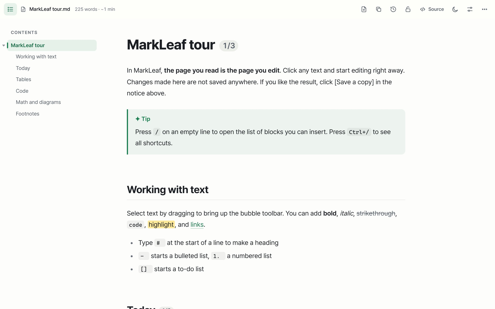
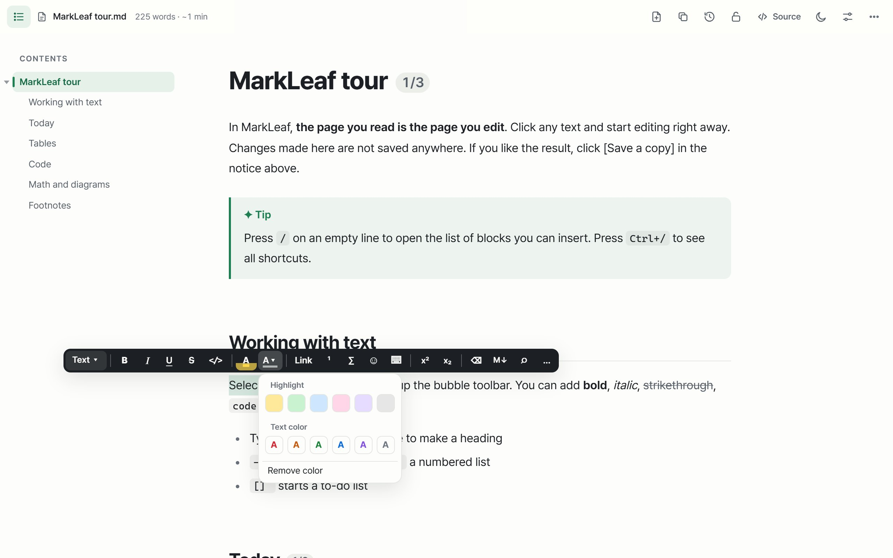
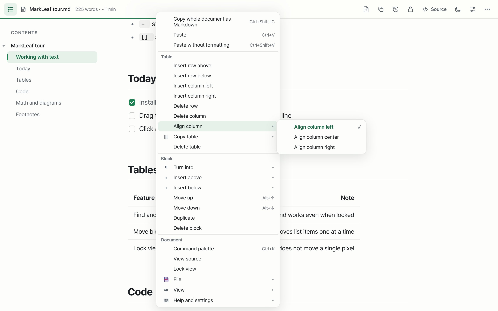
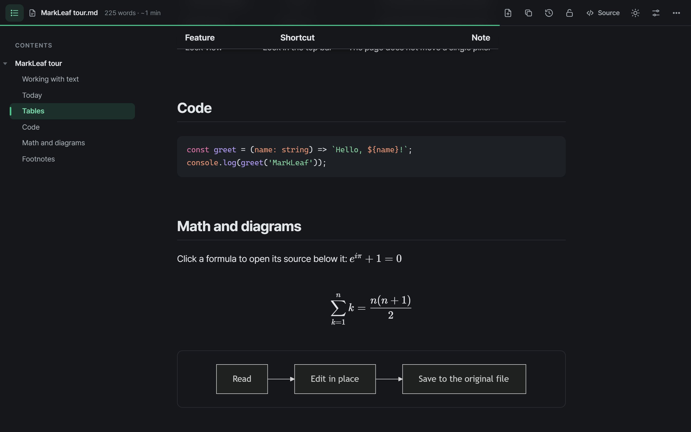
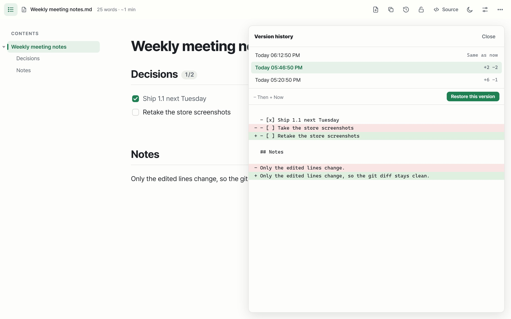

Slash commands
Type / for headings, to-dos, tables, callouts, toggles, math, diagrams and emoji.
MarkLeaf turns any Markdown file in Chrome into a clean, readable document. Click to edit right where you read, and it saves back to the original file, changing only what you touched.
Release 1.1 is ready. Only the lines you edit change.
/ on an empty line for blocks.| Area | Owner |
|---|---|
| Docs | Mina |
Animated demo. Your files open exactly like this in Chrome.
Works with
Most Markdown tools split your screen into source and preview. MarkLeaf gives you one screen that is both.
Drag a local .md file into a tab or open a GitHub Raw page. Headings, tables, code, math and diagrams render instantly.
Edit text where you read it. Press / for blocks, select text for the toolbox, right-click for smart menus.
Only what you changed is rewritten. Your spacing, list markers and line breaks stay as they were.
Everything appears when you need it and gets out of the way when you don't.





Type / for headings, to-dos, tables, callouts, toggles, math, diagrams and emoji.
Ctrl P quick open, search and replace across files, [[links]], backlinks and broken-link checks.
Five themes in light and dark, accent colors, fonts, size, line height, page width and custom CSS.
Auto-save when you pause. If another editor touched the file, MarkLeaf merges or shows a comparison instead of overwriting.
Paste from web pages, Word, Google Docs or Notion and get tidy Markdown back.
Print-ready PDF, a self-contained HTML file, six built-in templates and your own.
Present slides split by ---, listen with on-device voices, or switch to focus mode and see only the text.
Every action has a shortcut, and the whole editor works without a mouse. Press Ctrl / to see them all.
MarkLeaf runs entirely in your browser. There is nothing to sign up for and nothing to send.
Reading, editing, saving and version history all happen on your device.
No usage data, no cookies, no third-party scripts inside the extension.
Fonts, math and diagram libraries ship inside the extension, so it works offline.
| Feature | Read-only viewers | Split-preview editors | MarkLeaf |
|---|---|---|---|
| Shows .md as a clean document | |||
| Edit on the page you read | |||
| Opens right inside Chrome | |||
| Saves back to the original file | |||
| Rewrites only the lines you changed | |||
| Local version history |
Comparison with what is typical for each kind of tool; individual products vary.
Install MarkLeaf, then turn on "Allow access to file URLs" in Chrome's extension details for MarkLeaf — the welcome page has a button for it. Now drag any .md file into a Chrome window, or open it with a file:/// address.
Yes. Click the text and edit. The first time you save, Chrome asks you to pick the file or allow its folder. After that MarkLeaf saves automatically when you pause, rewriting only the parts you changed.
No. MarkLeaf keeps the original text of everything you didn't touch, including list markers, spacing and line breaks. Fix one word and git diff shows one line.
Markdown files opened with GitHub's "Raw" button show up as documents. You can also allow other sites one at a time from the toolbar button.
No. MarkLeaf has no servers, analytics or tracking. All fonts and libraries are bundled in the extension. See the privacy policy.
MarkLeaf is built for Chromium browsers. Edge and Whale can install it from the Chrome Web Store.
The interface is in English and Korean and follows your browser language. Documents can be in any language.
MarkLeaf is free. No account, no trial, no limits.
Install in seconds. Open any .md file. Start editing.
Add to Chrome — it's free